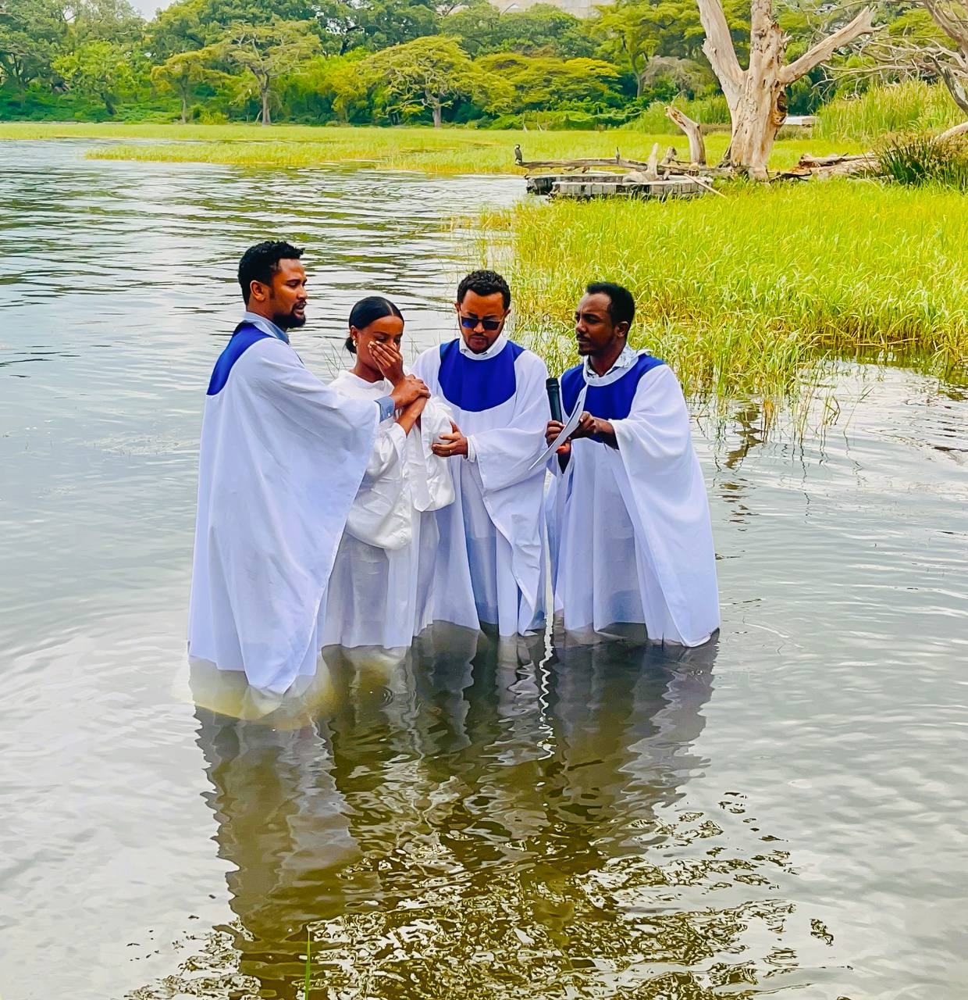
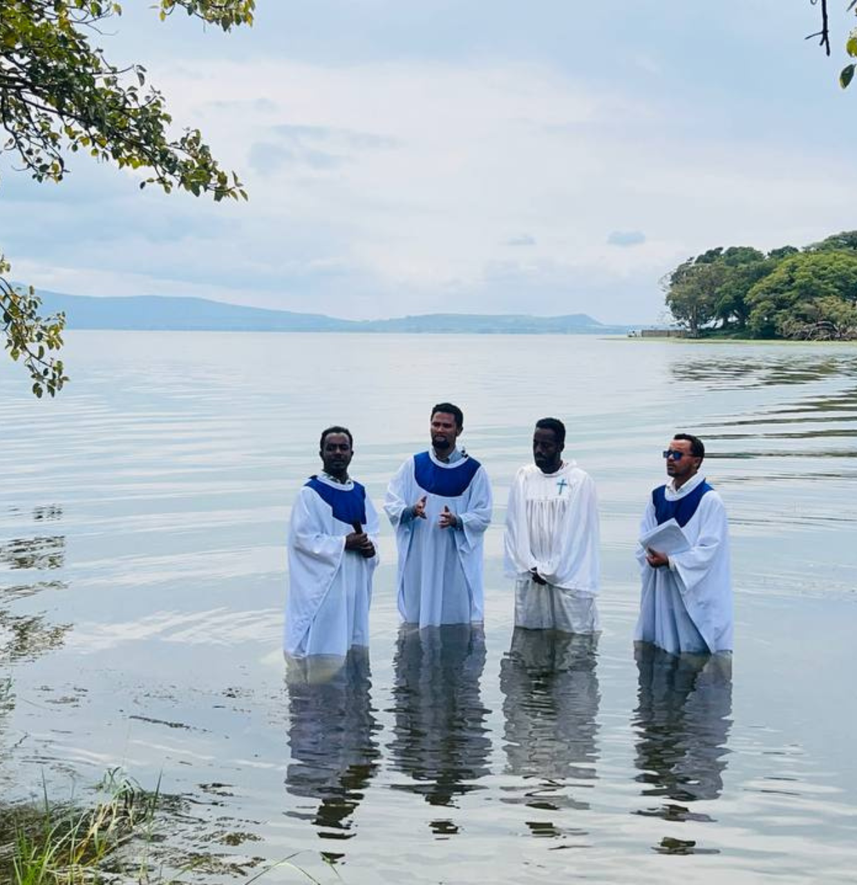
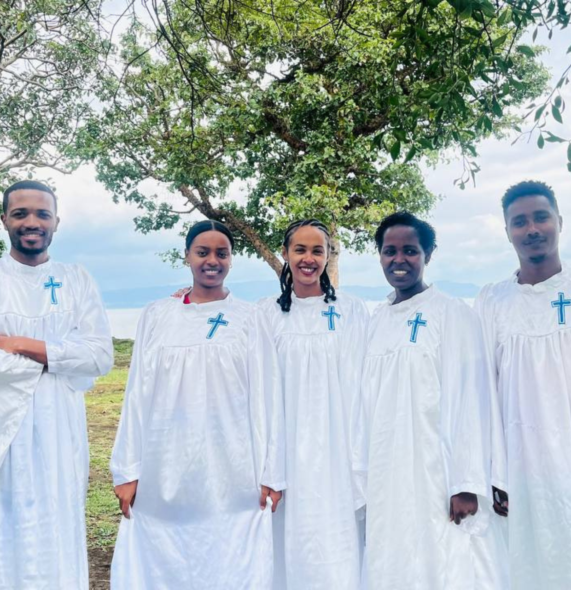
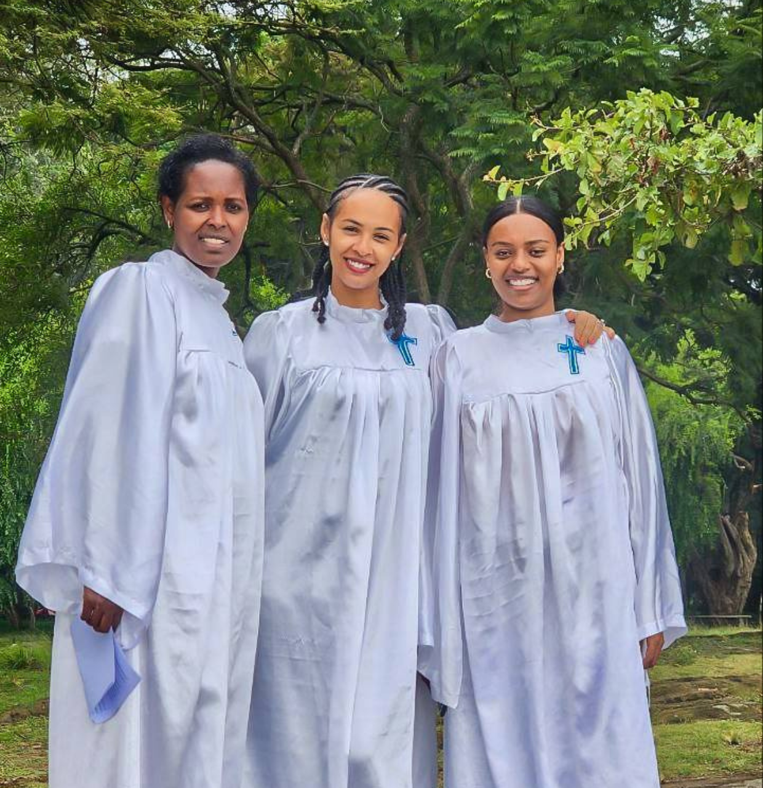

We rejoice and give glory to God for His wondrous work in the hearts of His people! It was with great joy that our church family gathered at the serene local lake to witness the baptism of nine members of our congregation. This beautiful ordinance is a powerful, public declaration of their faith and new life in Jesus Christ.
Baptism serves as a sacred symbol of our union with Christ in His death, burial, and resurrection. As each member descended into the waters, they visually proclaimed their renunciation of their former life of sin. Coming up out of the water, they symbolized their spiritual resurrection—raised to walk in newness of life, washed clean by the blood of the Lamb.




Prior to the baptism, each candidate shared their personal testimony of God's saving grace. We heard moving accounts of how the Lord sovereignly drew them out of spiritual darkness and opened their eyes to the truth of the Gospel. Hearing how the Holy Spirit convicted them of sin and granted them the gift of faith was profoundly edifying for the entire congregation.
We pray that these brothers and sisters will continue to walk in a manner worthy of the gospel, growing daily in the grace and knowledge of our Lord. Please join us in continually celebrating their obedience to Christ's command and supporting them in their journey of faith. Soli Deo Gloria!